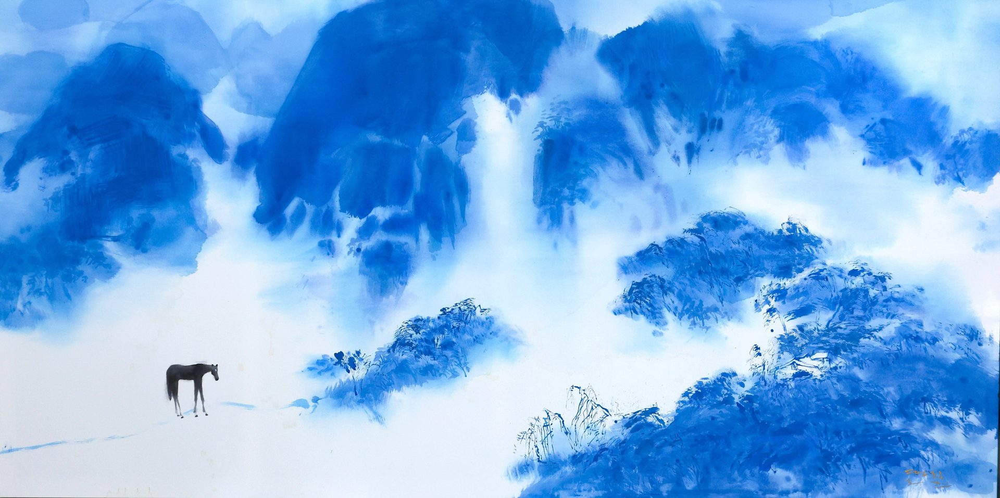

WANGYEUL
왕열
2025
Acrylic on canvas
280 × 140 cm
대표작 12점을 통해 왕열의 화면과 리듬을 먼저 감상합니다.
세 개의 축으로 압축한 작품세계를 통해 화면의 정서와 구조를 읽습니다.
작품 감상 뒤에 읽는 짧은 작가 소개입니다.
왕열 王烈
Wang Yeul · b. 1961
전통 한국화의 정신성과 현대적 조형 언어를 결합해, 유토피아와 신무릉도원, 먹과 산수의 화면을 지속적으로 구축해 왔다.
국내외 주요 기관 소장 기록과 문의 창구를 확인할 수 있습니다.
국립현대미술관
경기도미술관
대전시립미술관
미술은행
성남아트센터
홍익대학교 현대미술관
Wang Yeul · 王烈